| 第１回 1979.2.25 | 第２回 1980.2.24 | 第３回 1981.2.22 | 第４回 1982.2.28 | 第５回 1983.2.27 | 第６回 1984.2.26 | 第７回 1985.2.24 | 第８回 1986.2.23 | 第９回 1987.2.22 | 第10回 1988.2.21 | 第11回 1989.2.19 | 第12回 1990.2.25 | 第13回 1991.2.24 | 第14回 1992.2.23 | 第15回 1993.2.21 | 第16回 1994.2.20 | 第17回 1995.2.19 | 第18回 1996.2.18 | 第19回 1997.2.16 | 第20回 1998.2.11(祝) | 第21回 1999.2. | 第22回 2000.2. | 第23回 2001.2. | 第24回 2002.2.17 | 第25回 2003.2.16 | ||
| 地図 | 大観山 | 両総用水 | 六地蔵 | 金毘羅宮 | 高麗峠 | 赤根峠 | 小櫃林道 | 深良財産区 | 天狗岩 | 二子山 | 越生六地蔵 | 忍野八海 | 乙女道路 | 両総用水 | 赤根が峠 | 網代弁天山 | 天恵米の里 | 越生山吹の里 | 両総用水'97 | 南高麗赤根峠 | おっぺがわ | 忍野八海 | 両総用水２１ | 二子 | 赤根 | |
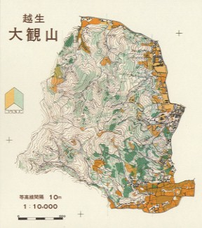 |
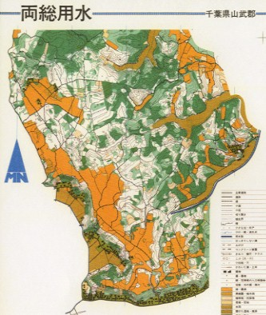 |
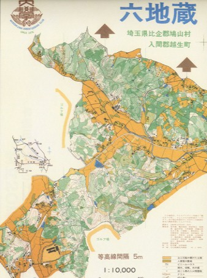 |
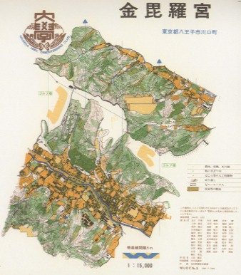 |
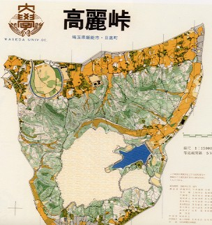 |
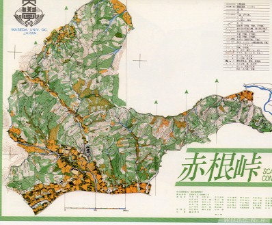 |
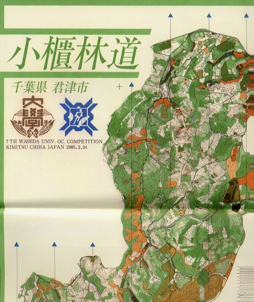 |
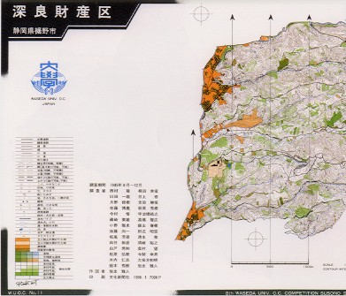 |
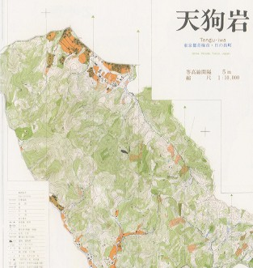 |
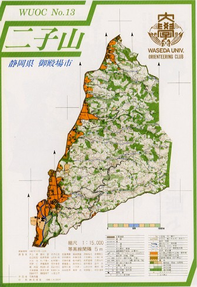 |
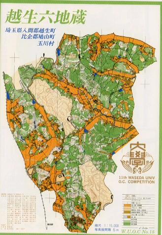 |
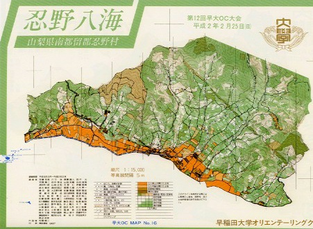 |
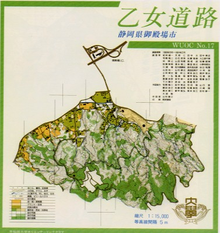 |
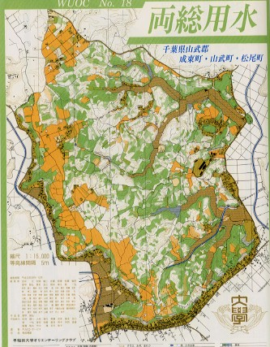 |
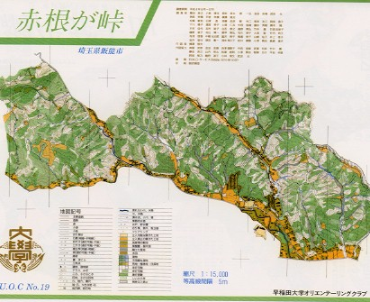 |
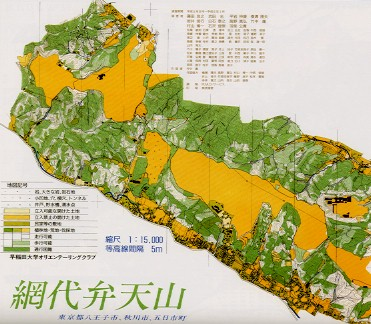 |
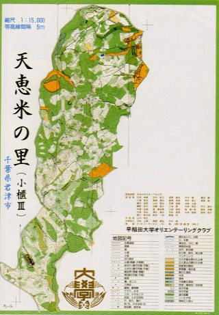 |
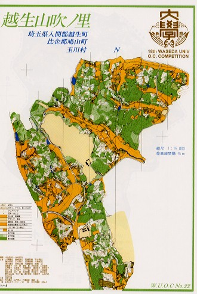 |
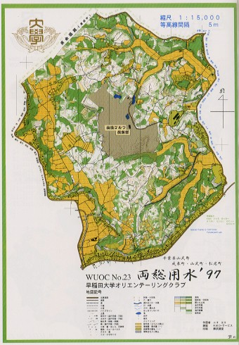 |
役員だったのに持っていない | 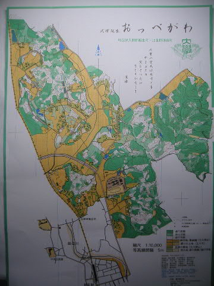 |
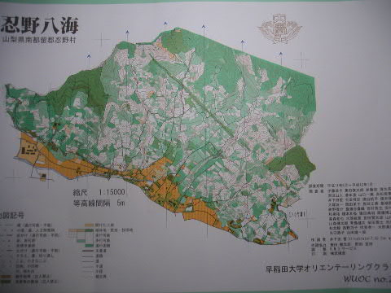 |
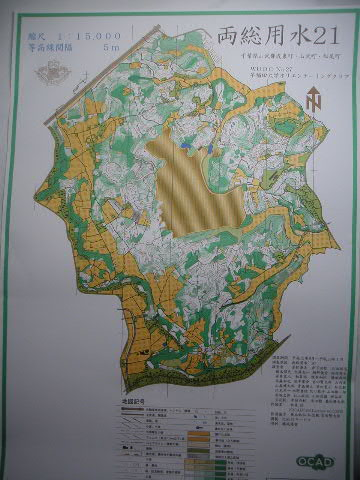 |
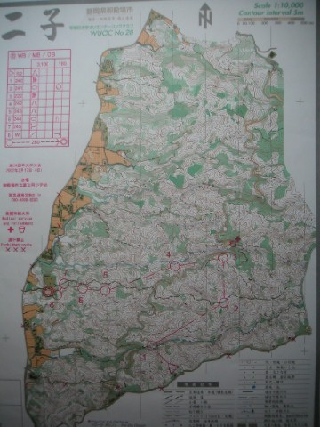 |
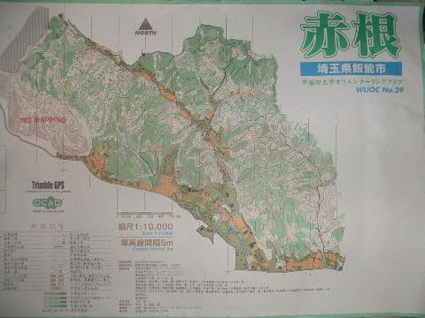 |
||
| 主な開催地域 | 埼玉県①越生町 | 千葉県①成東町 | 埼玉県②越生町 | 東京都①八王子市 | 埼玉県③日高町 | 埼玉県④飯能市 | 千葉県②君津市 | 静岡県①裾野市 | 東京都②青梅市・日の出町 | 静岡県②御殿場市 | 埼玉県⑤越生町 | 山梨県①忍野村 | 静岡県③御殿場市 | 千葉県③成東町 | 埼玉県⑥飯能市 | 東京都③八王子市 | 千葉県④君津市 | 埼玉県⑦越生町 | 千葉県⑤成東町 | 埼玉県⑧飯能市 | 埼玉県⑨越生町 | 山梨県②忍野村 | 千葉県⑤成東町 | 静岡県④御殿場市 | 埼玉県⑩飯能市 | |
| 天候 | 晴れ | 晴れ | 晴れ | 晴れ | 晴れ | 雪 | 晴れ | 晴れ | 雨 | 晴れのち曇 | 晴れ | 雨 | 晴れ | 晴れ | 曇 | 晴れ | 晴れ | 雪 | 雨 | 晴れ | 曇り | 曇りのち雨 | ||||
| 地図スペック | 1:10,000・10m・３段階 | 1:10,000・5m・３段階 | 1:10,000・5m・４段階 | 1:15,000・5m・４段階 | 1:15,000・5m・４段階 | 1:15,000・5m・４段階 | 1:15,000・5m・３段階 | 1:15,000・5m・３段階 | 1:10,000・5m・４段階 | 1:15,000・5m・３段階 | 1:15,000・5m・３段階 | 1:15,000・5m・４段階 | 1:15,000・5m・３段階 | 1:15,000・5m・３段階 | 1:15,000・5m・３段階 | 1:15,000・5m・３段階 | 1:15,000・5m・３段階 | 1:15,000・5m・３段階 | 1:15,000・5m・３段階 | 1:10,000・5m・３段階 | 1:15,000・5m・３段階 | 1:15,000・5m・４段階 | 1:10,000・5m・４段階 | 1:10,000・5m・４段階 | ||
| 特記事項 |
・1ヶ月後の第５回全日本（小田原・風祭）と共に山岳ＯＬの先駈けとなる。 ・この全日本は男子・山岸，女子長田とＯＣ会員が選手権を制する。 ・「くやしかったら走ってみろ」のコピーは山岸倫也による。 ・当時では珍しい参加料の事前納入制を第１回から採用する。 |
・まだ知名度が低く、埼玉県内の大会とバッティング。 ・参加者を集めるべくおそらく国内では初めて会場受付を行う。 ・1cm四方に裁断した地図(実物)をプログラムに同封。 ・希望スタート時刻を申告できた |
・早大ＯＣ大会に名称が固まる ・凝った演出は後のＯＣ大会らしさの原点 ・参加者に「禁煙誓約書」の提出を求める。 ・更衣所内に通路を設けた初の大会か |
・パンチチェックでの初のＯＣ大会となる。それ以前はクレヨンチェック ・スタートまでが１時間と遠く、ウィンドブレカー運搬を始める。 |
・1982年10月にはリレー大会を開催 ・２７９名の当日参加者 ・オープン ７２ 名 ・グループ ２０７ 名 |
・ＯＣ大会史上、初の1000人エントリー大会。実のところ、最後の１０人ほどはＯＢへの参加要請によるものだった。 ・未明からの雪が膝ほどまで積もり、あわやの事態に。 ・筆谷幹事長の提言により、詳細なマニュアルを早期に作成。 ・地図仕上がりが大会前々日になるなど、職人依存体質が問題に。 ・H21AをA1，A2に分割 |
・ＯＣ大会史上の金字塔的存在。赤根～小櫃～深良の三部作の中心をなす。参加者志向と先進性を柱とした斬新な企画がＯＣ大会らしさをアピール。ＯＬニュースでも大きく扱われる。 ・見開きＢ３のプログラムは、この後８，９，10，14回大会へと引き継がれる。 ・飲食物、ｵﾘｼﾞﾅﾙｸﾞｯｽﾞなどの販売がスタート。 ・会場・パトロール班新設 ・冬合宿の空き時間に準備作業実施 |
・ＯＣ大会史上の最高傑作。”ＯＣ大会中興三部作”の完結編。 ・この年以後エントリー数は1000人を下回ることがない。これだけの規模を保っている大会は全日本とインカレを除くと他に例を見ない。 ・マニュアル，「ＯＣ大会を彩った人々」等のｵﾘｼﾞﾅﾙ出版物を販売。 ・「10本のＩＭＯより一杯の水」とまで言われた珍妙な飲み物を配布。 |
・「吉野家」移動販売車を利用して牛丼を販売。 ・地元産の木材を生かしたｵﾘｼﾞﾅﾙ賞品を制作。 ・ＮＴＴの伝言ダイヤルを利用した開催中止情報の広報を開始（１１回まで）。以後、留守番電話の普及により姿を消すが、１８回中止の際にその有効性を見直す声も出た。 ・「日の出町」と急峻なテレインを表すシンボルマークは逸品。 |
・４年生（10期）の協力も大きく、「二子山」完成。遠隔地ながら、後の練習会でもしばしば利用される。 ・赤根～小櫃以後、途絶えていたグリーンのレイアウトが復活。以後、ＯＣ大会地図の顔となっている。 ・受付事務・計算センターにパソコンが導入される。 |
・確定情報入り成績速報（一覧表形式）がスタート ・女子更衣室内にも速報を掲示 ・実行委員長・横田啓が当日朝交通事故に遭い、ケガを負いながらも隠して運営に当たる。 ・誘導路上にコンビニ等があった関係で弁当販売が不振に終わる |
・新宿から直通バスを運行 ・ＨＥをＨＥ１，ＨＥ２に分割 ・電光速報がスタート |
||||||||||||||
| チーフ | 実行委員長 | 本田雅章 | 川久保雄介 | 新谷恵司 | 上田泰正 | 斎藤正和 | 筆谷敏正 | 臼田一雄 | 西村 隆 | 井上 修 | 大宮康弘 | 横田 啓 | 田中寿近 | 清水健二 | 菅 伸二 | 平岩伸康 | 高野真弘 | 小澤賢治 | 石沢俊崇 | － | 根本恵輔 | 清水英仁 | 大塚友一 | 猿田典明 | 青島健太 | 纓坂 尚 |
| 運営責任者 | （第５回大会までは役職として明確には設けず） | 尾田篤士 | 池ヶ谷悦朗 | 桐田幸宏 | 奥村 望 | 木ノ下真一 | 八木昇一 | 林 博之 | 川崎 曜 | 鎗水秀樹 | 原田憲一 | 島崎達夫 | 山田直樹 | 山内祐子 | ||||||||||||
| 競技責任者 | 宮川達哉 | 鈴木秀樹 | 岩出雅人 | 飯山春樹 | 羽鳥和重 | 斎藤直人 | 宅間隆二 | 松葉敏則 | 愛甲智弘 | 武田 光 | 竹中 庸 | 山内亮太 | 羽柴公貴 | 内藤敏明 | ||||||||||||
| 作図者 | 堀貫 功 | 川久保雄介 | 豊島利男 | 上田泰正 | 城田直之 | 茅野耕治 | 鈴木秀樹 | 岩出雅人 | 飯山春樹 | 羽鳥和重 | 斎藤直人 | 宅間隆二 | 山村康之 | 愛甲智弘 | 横溝隆夫 | 竹中 庸 | 山内亮太 | 羽柴公貴 | 石沢俊崇 | 野田宜邦 | 兼田僚太郎 | 井下田 哲 | 和泉 祐 | 知念 毅 | 立花 聡 | |
| 申込先 | 本田雅章 | 川久保雄介 | 豊島利男 | 上田泰正 | 豊田和弘 | 池ヶ谷悦朗 | 白戸秀和 | 須崎裕之 | 高橋智広 | 伊藤典男 | 山田和範 | 山村康之 | 葛西郵便局留・福島 敦 | 川通郵便局留・横溝隆夫 | 五井東郵便局留・渡辺徹 | 原山郵便局留・東條 敏 | 代田将己 | 早大ＯＣ（郵便振替口座） | 早大ＯＣ大会事務局（郵便振替口座） | 早大ＯＣ大会事務局（郵便振替口座） | ||||||
| メインコピー | くやしかったら走ってみろ | － | － | インカレ前哨戦 | － | － | Orienteer Oriented 喜ばれる大会をつくりたい |
大会の原点 | 進取と伝統と | THAT'S STANDARD | ＯＣ大会よ、心の故郷なれ | 新たなる挑戦 | MORE CREATIVE,EXCITING OC | 充実の予感 | 久遠の理想 | 一意専心 | － | － | － | － | － | |||||
| ｴﾘｰﾄｸﾗｽ 距離 登距離 優勝者 |
ME 第16回までHE |
6.7Km ↑660m 友野晴夫 |
8.3Km ↑350m 高尾昭次 |
9.5Km ↑530m 村越 真① |
10.2Km ↑540m 村越 真② |
11.7Km ↑660m 村越 真③ |
11.3Km ↑840m 村越 真④ |
10.2Km ↑530m 佐藤信彦 |
村越 真⑤ | 7.9Km ↑740m 村越 真⑥ |
8.1Km 村越 真⑦ |
10.1Km ↑550m 山岸倫也 |
7.0Km HE1 橋本裕志 HE2 村越 真⑧ |
9.1Km 鹿島田浩二① |
14.3Km 村越 真⑨ |
10.8Km ↑630m 鹿島田浩二② |
11.5Km ↑530m 村越 真⑩ |
9.8Km ↑490m 村越 真⑪ |
大雪により開催中止 | 13.2Km ↑370m 鹿島田浩二③ |
||||||
| WE 第16回までDE |
上野多佳子 |
6.3Km ↑260m 井出裕子① |
6.1Km ↑390m 長田由紀① |
6.9Km ↑230m 長田由紀② |
5.8Km ↑340m 長田由紀③ |
7.2Km ↑320m 長田由紀④ |
7.0Km ↑350m 長田由紀⑤ |
新沢祐子① | 4.7Km ↑400m 新沢祐子② |
4.7Km 木植早生① |
7.3Km ↑350m 木植早生② |
6.5Km 深田幸子 |
5.5Km ↑330m 出田裕子（井出）② |
10.1Km 木植早生③ |
7.5Km ↑380m 木植早生④ |
8.1Km ↑310m 宮本知江子 |
7.3Km ↑390m 木植早生⑤ |
－ | 9.4Km ↑265m 木植早生⑥ |
|||||||
| 実参加者数 | ５３７ 名 | ２５４ 名 | ６７２ 名 | ６７９ 名 | ９５７ 名 | ７５６ 名 | ６８３ 名 | ９８１ 名 | ９１９ 名 | ９６７ 名 | ８４７ 名 | ８８８ 名 | １，２６４ 名 | １，２７４ 名 | １，１５７ 名 | １，０６５ 名 | ９５９ 名 | － | ７３３ 名 | |||||||
| 事前申込者数 | （不詳） | （不詳） | （不詳） | ７４８ 名 | ７８６ 名 | １，００８ 名 | ８１５ 名 | １，０２１ 名 | １，０６６ 名 | １，１６４ 名 | １，０８０ 名 | １，０５３ 名 | １，２４６ 名 | １，３５４ 名 | １，２４６ 名 | １，１３２ 名 | １，０６８ 名 | １，２４４ 名 | １，０２３ 名 | |||||||
| 郵送最終申込締切 | １月３１日必着 | １月３１日必着 | １月３１日必着 | １月３１日必着 | １月３１日消印有効 | １月３１日消印有効 | １月３１日消印有効 | １月２７日消印有効 | １月２６日消印有効 | １月２５日消印有効 | １月１４日消印有効 | １月１６日消印有効 | １月１４日消印有効 | １月１７日消印有効 | １月１２日消印有効 | １月１１日消印有効 | １月１１日消印有効 | １月１７日消印有効 | １月１３日消印有効 | １月９日消印有効 | ||||||
| クラス分け | HE,H21A,H17A,H35A,H14A,H43A, H21B,H35B,H14B,H50,H13,HC DE,D21,D35,D43,D16,D15,DC OA,OB,OC,G |
HE,H21A,H18A,H35A,H14A,H43A, H18B,H35B,H13A,H50,HC DE,D18,D35,D43 OA,OB,OC,G |
HE,H21A,H18A,H35A,H14A,H43A, H18B,H14B,H35B,H13,H50,HC DE,D18,D35,D17,D43,DC OA,OB,OC,OG |
HE,H21A,H18A,H35A,H14A,H43A, H18B,H14B,H35B,H13,H50,HC DE,D18,D35,D17,D43,DC OA,OB,OC,G |
HE,H21A,H19A,H35A,H15A,H43A, H21B,H19B,H15B,H35B,H13,H50,HC DE,D19,D35,D17,D13,DC OA,OB,OC,G |
HE,H21A,H19A,H35A,H14A,H43A, H21B,H19B,H35B,H17B,H13,H50,HC DE,D17,D19,D35,D13,DC OA,OB,OC,GA,GB |
HE,H21A,H19A,H35A,H17A,H43A, H13A,H50A,H21B,H17B,H35B,HC DE,D21A,D17A,D35A,DB,DC OA,OB,OC |
HE,H21A,H19A,H35A,H17A,H43A,H13A,H50A, H21B,H17B,H35B,HC DE,D21A,D17A,D35A,DB,DC OA,OB,OC,ｸﾞﾙｰﾌﾟ |
HE,H21A,H21AS,H19A,H35A,H17A,H43A,H13A,H50A, H60A,H21B,H17B,H35B,HC DE,D21A,D17A,D35A,DB,DC OA,OB,OC,ｸﾞﾙｰﾌﾟ |
HE,H21A,H21AS,H19A,H35A,H17A,H43A,H13A,H50A,H60A, H21B,H17B,H35B,HC DE,D21A,D17A,D35A,DB,DC OA,OB,OC,ｸﾞﾙｰﾌﾟ |
HE,H21A,H21AS,H19A,H35A,H17A,H43A,H13A,H50A,H60A, H21B,H17B,H35B,HC DE,D21A,D17A,D35A,D43ADB,DC OA,OB,OC,ｸﾞﾙｰﾌﾟ |
HE,H21A,H21AS,H19A,H35A,H17A,H43A,H13A,H50A,H60A, H21B,H17B,H35B,HC DE,D21A,D17A,D35A,D21B,D35B,DC OA,OB,OC,ｸﾞﾙｰﾌﾟ, 村民,県民 |
HE,H21A,H21AS,H19A,H35A,H17A,H43A,H13A,H50A,H60A, H21B,H17B,H35B,HC DE,D21A,D19A,D35A,D21B,D35B,DC OA,OB,OC,ｸﾞﾙｰﾌﾟ, 市民 |
HE,H21A,H21AS,H19A,H35A,H17A,H43A,H13A,H50A,H60A, H21B,H17B,H35B,HC DE,D21A,D19A,D35A,D21B,D35B,DC OA,OB,OC,ｸﾞﾙｰﾌﾟ, 町民 |
HE,H21A,H21AS,H19A,H35A,H17A,H43A,H13A,H50A,H60A, H21B,H17B,H35B,HC DE,D21A,D19A,D35A,D21B,D35B,DC OA,OB,OC,ｸﾞﾙｰﾌﾟ, 市民 |
HE,H21A,H21AS,H19A,H35A,H17A,H43A,H13A,H50A,H60A, H21B,H17B,H35B,HC DE,D21A,D19A,D35A,D21B,D35B,DC OA,OB,OC,ｸﾞﾙｰﾌﾟ, 市民 |
ME,MSE,M21A,M21AS,M20A,M35A,M17A,M43A, M14A,M50A,M60A,M21B,M20B,M35B,MC WE,W21A,W20A,W35A,W21B,W35B,WC OA,OB,OC,ｸﾞﾙｰﾌﾟ, 市民 |
ME,MSE,M21A,M21AS,M20A,M35A,M18A,M40A, M15A,M50A,M60A,M21B,M20B,M35B,MC WE,W21A,W20A,W35A,W21B,W35B,WC OA,OB,OC,ｸﾞﾙｰﾌﾟ, 町村民 |
ME,M21A,M21AS,M20A,M35A,M18A,M43A,M15A,M50A,M60A, M21B,M20B,M35B,MC WE,W21A,W21AS,W20A,W35A,WB,WC OA,OB,OC,ｸﾞﾙｰﾌﾟ, 町民 |
ME,M21A,M21AS,M20A,M35A,M18A,M43A,M15A,M50A,M60A, M21B,M20B,M35B,MC WE,W21A,W21AS,W20A,W35A,WB,WC OA,OB,OC,ｸﾞﾙｰﾌﾟ, 市民 |
||||||
| 協賛企業 | － | － | Sweat Shop Japan | － | 大塚製薬 | カゴメ，武揚堂 | ｶｺﾞﾒ,武揚堂,明星食品 | カゴメ | ペプシコ，吉野家 | 武田食品，吉野家 | ニチレイ，武揚堂 | オリエント,ＪＴ,武揚堂 | オリエント,サントリー | サントリー | ｻﾝﾄﾘｰ,ｱｰﾄｽﾎﾟｰﾂ | ｻﾝﾄﾘｰ,ｱｰﾄｽﾎﾟｰﾂ | カルピス食品工業 | カルピス食品工業 | カルピス食品工業 | カルピス食品工業 | ||||||
| 協賛企業提供飲料 | － | － | － | － | ポカリスウェット | リベラ | リベラ | ＩＭＯ | Ｗｉｌｓｏｎ | キャロットミックス | アセロラドリンク | ＨＡＬＦＴＩＭＥ | 鉄骨飲料 | 熱血飲料 | デカビタＣ | ｅｖｉａｎ | ｅｖｉａｎ | カルピスウォーター | カルピスウォーター | － | ||||||
| 前日宿泊先 | 静山荘 | 山武荘 | 越生館 | 秋留荘 | 鎌北湖ユース | 飯能ユース | 藤川旅館 | 上原区公民館ほか | 日の出公民館 | 大坂・駒門公民館 | 西和田公会堂ほか | 富岳苑 | 御殿場市青少年会館 | 山武荘 | 雨だれ荘 | 本陣 | 藤川旅館 | 鎌北湖ユース | 山武荘 | （旧飯能ユース） | ||||||
| 当日宿泊先 | 静山荘 | 山武荘 | 越生館 | 秋留荘 | 鎌北湖ユース | 入間グリーンロッジ | 藤川旅館 | ヘルスプラザ一ノ瀬 | 青梅簡保保養ｾﾝﾀｰ | ヘルスプラザ一ノ瀬 | （川越市内） | 山中湖簡保保養ｾﾝﾀｰ | ヘルスプラザ一ノ瀬 | 白子温泉・竹の家 | 雨だれ荘 | 本陣 | 藤川旅館 | 鎌北湖ユース | 山武荘 | （旧飯能ユース） | ||||||